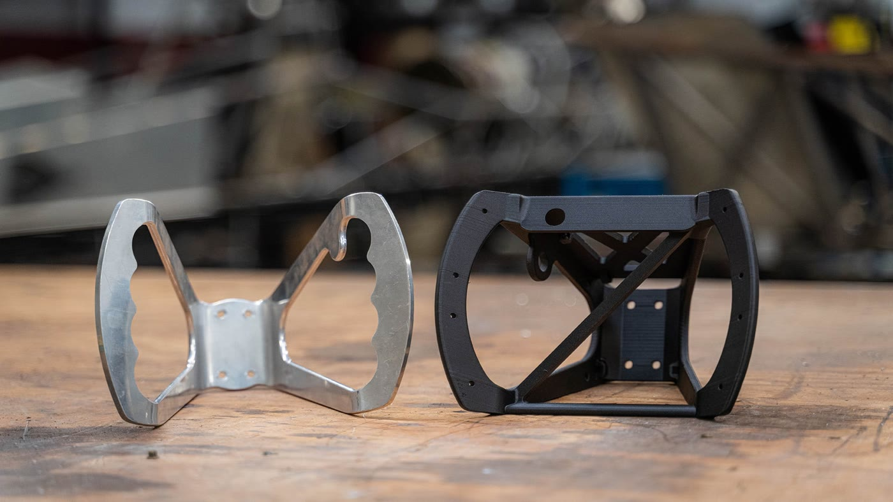

X7材料 Onyx（FX10 可打印）
Larsen Motorsports：为一位车手量身做方向盘，交期从 8 天变 2 天
喷射动力直线加速赛 ・ 美国
时速 280 英里的喷射动力直线加速赛车，市售蝴蝶型方向盘照标准手型制作，车手 Josette Roach 搆不到关键按键。车队改用 X7 以 Onyx 为基材、在受力路径上铺连续碳纤维，量身打印出方向盘，零件交期从 8 天缩到 2 天；实测比原本的铝制方向盘更硬，受力时不变形。设计阶段先用 Simulation 软件预测受力，不必实体印十个版本找破坏点。
8 天 → 2 天原厂案例（英文） →